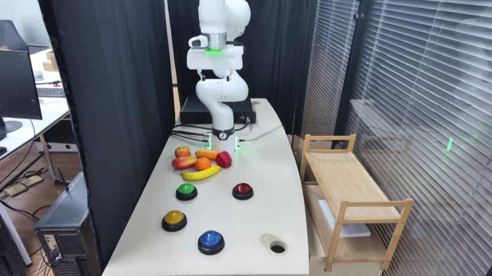

TAVP · 004_franka_press_buttons_standard_success
Franka press buttons standard success

Visual review action_review.json
{
"video_id": "004",
"review_method": "Visual inspection of every second decoded frame across the entire MP4 plus native-resolution transition frames, followed by native initial PNG",
"review_source_video": "/Users/nijiachen/Downloads/Robotvideo/TAVP/004_franka_press_buttons_standard_success/original/video.mp4",
"source_frame_count": 1300,
"source_fps": 30.0,
"inspected_frame_stride": 2,
"inspected_sampled_frame_count": 650,
"reviewed_contact_sheets": [
"sheet_001.jpg",
"sheet_002.jpg",
"sheet_003.jpg",
"sheet_004.jpg",
"sheet_005.jpg",
"sheet_006.jpg",
"sheet_007.jpg",
"sheet_008.jpg",
"sheet_009.jpg",
"sheet_010.jpg",
"sheet_011.jpg"
],
"native_detail_frames": [
60,
100,
150,
250,
360,
370,
380,
385,
390,
395,
400,
405,
415,
425,
430,
440,
445,
450,
455,
456,
460,
465,
490,
520,
560,
585,
600,
615,
630,
650,
750,
850,
875,
900,
950,
1100,
1160,
1175,
1190,
1200,
1205,
1210,
1220,
1235,
1250,
1299
],
"initial_scene": "A fixed elevated oblique view looks along a light tabletop toward a white articulated robot mounted at the back. Its white two-finger gripper, with green tape on the housing, is raised and open. Four large colored dome buttons sit on black circular bases: yellow at the front-left, blue at the front-center, green farther back on the left, and red farther back on the right. A cluster of colorful fruit and vegetable props, including a yellow banana, sits behind the buttons. Black curtains surround the rear and left; window blinds and a wooden shelf cart are on the right, with a monitor and computer equipment at the left edge.",
"observed_sequence": [
{
"start_frame": 0,
"end_frame_inclusive": 150,
"action": "The robot lowers and extends its open gripper forward and left, above the fruit props and behind the front-left yellow button.",
"confidence": "high"
},
{
"start_frame": 151,
"end_frame_inclusive": 360,
"action": "The fingers close together while the wrist remains nearly stationary above the tabletop, followed by a pause.",
"confidence": "high"
},
{
"start_frame": 361,
"end_frame_inclusive": 448,
"action": "The closed gripper moves forward and down, passing in front of the green button without a separate held press, then contacts the top of the yellow button with its fingertips and holds the downward contact briefly.",
"confidence": "high"
},
{
"start_frame": 449,
"end_frame_inclusive": 455,
"action": "The robot begins lifting the fingertips off the yellow button, completing the first press and release.",
"confidence": "high"
},
{
"start_frame": 456,
"end_frame_inclusive": 638,
"action": "The wrist lifts and shifts to the right, aligns the closed fingertips over the front blue button, lowers them onto its dome, and holds a brief press.",
"confidence": "high"
},
{
"start_frame": 639,
"end_frame_inclusive": 898,
"action": "The fingertips withdraw from blue; the robot raises and moves rearward and right over the red button, then lowers to press and briefly hold its dome.",
"confidence": "high"
},
{
"start_frame": 899,
"end_frame_inclusive": 1200,
"action": "The robot releases red, raises the gripper, travels left across the rear of the button area, and lowers onto the green button for a brief held press.",
"confidence": "high"
},
{
"start_frame": 1201,
"end_frame_inclusive": 1299,
"action": "The robot releases green and raises its gripper backward above the fruit props. The fingertips open during the final withdrawal; all four button bases and the props remain in place.",
"confidence": "high"
}
],
"multi_step": true,
"selected_execution_status": "success",
"selected_segment": {
"start_frame": 0,
"end_frame_exclusive": 456,
"reason": "The sequence contains four separate button presses. Retain the first completed press, on the yellow button, through its brief initial release and stop before the transport toward blue.",
"terminal_state": "The closed fingertips have just begun lifting from the yellow button after the held downward contact. The wrist remains immediately above yellow, and the other buttons and fruit props remain stationary."
},
"full_sequence_prompt": "The robotic arm presses the yellow, blue, red, and green buttons in that order with its closed gripper, lifting clear between presses, then withdraws and opens the gripper. Keep the camera fixed; preserve robot geometry, physically valid joint motion, and normal gripper opening and closing.",
"world_model_prompt": "The robotic arm presses the yellow button with its closed gripper, then lifts just clear of the button. Keep the camera fixed; preserve robot geometry, physically valid joint motion, and normal gripper opening and closing.",
"uncertainties": [
"The buttons' internal electrical activation is not visible; the review identifies presses from fingertip contact, downward motion, held contact, and release. The dome travel is small."
],
"evidence_frame_indices": [
0,
150,
425,
455,
615,
875,
1175,
1299
],
"prompt_provenance": "visually_authored_from_video_and_initial_frame",
"prompt_protocol": "concise_action_v1",
"review_source_original_video": "004_franka_press_buttons_standard_success/original/video.mp4",
"review_source_crop_rectangle": null
}